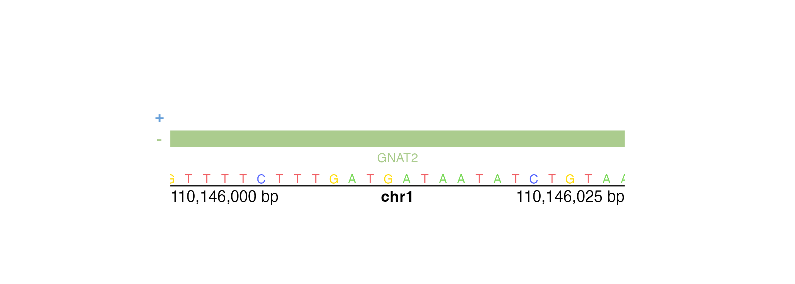

BentoBox is modular and separates plotting and annotating into two different categories of functions. To specify which plot to annotate within an annotation function, each annotation function has a plot parameter that accepts BentoBox plot objects. This will facilitate in inheriting genomic region and plot location information. In this article we will go through some of the major types of annotations used to create accurate and informative BentoBox plots.
All the data included in this article can be found in the supplementary package BentoBoxData.
Genome labels
Genome labels are some of the most important annotations for giving context to the genomic region of data. bb_annoGenomeLabel() can add genome labels with various customizations.
Genome labels can be shown at three different basepair scales (Mb, Kb, and bp) depending on the size of the region and the desired accuracy of the start and end labels. In the genomic region chr21:28000000-30300000 we can use a Mb scale:
data("IMR90_HiC_10kb")
bb_pageCreate(
width = 3, height = 3.25, default.units = "inches",
showGuides = FALSE, xgrid = 0, ygrid = 0
)
hicPlot <- bb_plotHicSquare(
data = IMR90_HiC_10kb,
chrom = "chr21", chromstart = 28000000, chromend = 30300000,
assembly = "hg19",
x = 0.25, y = 0.25, width = 2.5, height = 2.5, default.units = "inches"
)
bb_annoGenomeLabel(
plot = hicPlot, scale = "Mb",
x = 0.25, y = 2.76
)
If we use a more specific genomic region like chr21:28255554-29354665, the Mb scale will be rounded and indicated with an approximation sign:
#> Warning: Start label is rounded.
#> Warning: End label is rounded.
Thus, it makes more sense to use the bp scale for ultimate accuracy:
data("IMR90_HiC_10kb")
bb_pageCreate(
width = 3, height = 3.25, default.units = "inches",
showGuides = FALSE, xgrid = 0, ygrid = 0
)
hicPlot <- bb_plotHicSquare(
data = IMR90_HiC_10kb,
chrom = "chr21", chromstart = 28255554, chromend = 29354665,
assembly = "hg19",
x = 0.25, y = 0.25, width = 2.5, height = 2.5, default.units = "inches"
)
bb_annoGenomeLabel(
plot = hicPlot, scale = "bp",
x = 0.25, y = 2.76
)If our genomic region is small enough, bb_annoGenomeLabel() can also be used to display the nucleotide sequence of that region. Similar to IGV, bb_annoGenomeLabel() will first represent nucleotides as colored boxes:

At even finer scales, bb_annoGenomeLabel() will then represent nucleotides with colored letters:

In the specific case of square Hi-C plots (bb_hicSquare objects), bb_annoGenomeLabel() can annotate the genome label along the y-axis:
data("IMR90_HiC_10kb")
bb_pageCreate(
width = 3.25, height = 3, default.units = "inches",
showGuides = FALSE, xgrid = 0, ygrid = 0
)
hicPlot <- bb_plotHicSquare(
data = IMR90_HiC_10kb,
chrom = "chr21", chromstart = 28000000, chromend = 30300000,
assembly = "hg19",
x = 0.5, y = 0.25, width = 2.5, height = 2.5, default.units = "inches"
)
bb_annoGenomeLabel(
plot = hicPlot, scale = "Mb",
axis = "y",
x = 0.5, y = 0.25,
just = c("right", "top")
)Plot axes
In addition to genomic axes, it is also common to annotate standard x and y-axes for measures of scale. This functionality is provided by the bb_annoXaxis() and bb_annoYaxis() functions. For example, a Manhattan plot requires a y-axis to indicate the range of p-values:
library("TxDb.Hsapiens.UCSC.hg19.knownGene")
data("hg19_insulin_GWAS")
bb_pageCreate(
width = 7.5, height = 2.75, default.units = "inches",
showGuides = FALSE, xgrid = 0, ygrid = 0
)
manhattanPlot <- bb_plotManhattan(
data = hg19_insulin_GWAS, assembly = "hg19",
fill = c("grey", "#37a7db"),
sigLine = TRUE,
col = "grey", lty = 2, range = c(0, 14),
x = 0.5, y = 0.25, width = 6.5, height = 2,
just = c("left", "top"),
default.units = "inches"
)
bb_annoGenomeLabel(
plot = manhattanPlot, x = 0.5, y = 2.25, fontsize = 8,
just = c("left", "top"), default.units = "inches"
)
bb_plotText(
label = "Chromosome", fontsize = 8,
x = 3.75, y = 2.45, just = "center", default.units = "inches"
)
## Annotate y-axis
bb_annoYaxis(
plot = manhattanPlot, at = c(0, 2, 4, 6, 8, 10, 12, 14),
axisLine = TRUE, fontsize = 8
)
## Plot y-axis label
bb_plotText(
label = "-log10(p-value)", x = 0.15, y = 1.25, rot = 90,
fontsize = 8, fontface = "bold", just = "center",
default.units = "inches"
)
bb_annoXaxis() and bb_annoYaxis() have similar usages and customizations.
Heatmap legends
Heatmap-style plots with numbers translated to a palette of colors require a specific type of legend. This legend can be plotted with bb_annoHeatmapLegend() in both vertical and horizontal orientations. Genomic plots that typically require this annotation are Hi-C plots made with bb_plotHicRectangle(), bb_plotHicSquare(), or bb_plotHicTriangle().
data("IMR90_HiC_10kb")
bb_pageCreate(
width = 3.25, height = 3.25, default.units = "inches",
showGuides = FALSE, xgrid = 0, ygrid = 0
)
params <- bb_params(
chrom = "chr21", chromstart = 28000000, chromend = 30300000,
assembly = "hg19",
x = 0.25, width = 2.75, just = c("left", "top"), default.units = "inches"
)
hicPlot <- bb_plotHicSquare(
data = IMR90_HiC_10kb, params = params,
zrange = c(0, 70), resolution = 10000,
y = 0.25, height = 2.75
)
## Annotate Hi-C heatmap legend
bb_annoHeatmapLegend(
plot = hicPlot, fontsize = 7,
orientation = "v",
x = 0.125, y = 0.25,
width = 0.07, height = 0.5, just = c("left", "top"),
default.units = "inches"
)
bb_annoHeatmapLegend(
plot = hicPlot, fontsize = 7,
orientation = "h",
x = 3, y = 3.055,
width = 0.5, height = 0.07, just = c("right", "top"),
default.units = "inches"
)Hi-C pixels and domains
It is possible to annotate the pixels on a Hi-C plot with provided BEDPE data. Pixels can be annotated with boxes, circles, or squares.
data("IMR90_HiC_10kb")
data("IMR90_DNAloops_pairs")
bb_pageCreate(
width = 3.25, height = 3.24, default.units = "inches",
showGuides = FALSE, xgrid = 0, ygrid = 0
)
hicPlot <- bb_plotHicSquare(
data = IMR90_HiC_10kb, resolution = 10000, zrange = c(0, 70),
chrom = "chr21", chromstart = 28000000, chromend = 30300000,
assembly = "hg19",
x = 0.25, y = 0.25, width = 2.75, height = 2.75,
just = c("left", "top"),
default.units = "inches"
)
## Annotate pixels
pixels <- bb_annoPixels(
plot = hicPlot, data = IMR90_DNAloops_pairs, type = "box",
half = "top"
)If we want to annotate one pixel of interest, we can subset our BEDPE data and bb_annoPixels() will only annotate the specified pixels:
data("IMR90_HiC_10kb")
data("IMR90_DNAloops_pairs")
## Subset BEDPE data
IMR90_DNAloops_pairs <- IMR90_DNAloops_pairs[which(IMR90_DNAloops_pairs$start1 == 28220000 &
IMR90_DNAloops_pairs$start2 == 29070000), ]
bb_pageCreate(
width = 3.25, height = 3.24, default.units = "inches",
showGuides = FALSE, xgrid = 0, ygrid = 0
)
hicPlot <- bb_plotHicSquare(
data = IMR90_HiC_10kb, resolution = 10000, zrange = c(0, 70),
chrom = "chr21", chromstart = 28000000, chromend = 30300000,
x = 0.25, y = 0.25, width = 2.75, height = 2.75,
just = c("left", "top"),
default.units = "inches"
)
## Annotate pixel
pixels <- bb_annoPixels(
plot = hicPlot, data = IMR90_DNAloops_pairs, type = "arrow",
half = "bottom", shift = 12
)
For genomic ranges of domain data, we can annotate Hi-C domains with bb_annoDomains(). For example, if we want to annotate the following domains
domains <- GRanges("chr21",
ranges = IRanges(
start = c(28210000, 29085000, 29430000, 29700000),
end = c(29085000, 29430000, 29700000, 30125000)
)
)in this Hi-C plot:

We would use a similar workflow to how we annotated Hi-C pixels:
bb_pageCreate(
width = 3.25, height = 3.24, default.units = "inches",
showGuides = FALSE, xgrid = 0, ygrid = 0
)
hicPlot <- bb_plotHicSquare(
data = IMR90_HiC_10kb, resolution = 10000, zrange = c(0, 70),
chrom = "chr21", chromstart = 28000000, chromend = 30300000,
x = 0.25, y = 0.25, width = 2.75, height = 2.75,
just = c("left", "top"),
default.units = "inches"
)
## Annotate domains
domainAnno <- bb_annoDomains(
plot = hicPlot, data = domains,
half = "bottom", linecolor = "red"
)
bb_annoGenomeLabel(
plot = hicPlot,
x = 0.25, y = 3.01
)We can either annotate single domains or multiple domains at once depending on the data input.
Genomic region highlights and zooms
The last category of annotations that is often used in plotting genomic data is highlighting and zooming. Many figures benefit from providing a broader context of data and then highlighting a smaller genomic region to show data at a finer scale. In this example, we will plot an ideogram and highlight and zoom in on a genomic region of interest to see the signal track data in that region.
First we can plot our ideogram:
data("cytoBand.Hsapiens.UCSC.hg19")
library(TxDb.Hsapiens.UCSC.hg19.knownGene)
bb_pageCreate(
width = 6.25, height = 2.25, default.units = "inches",
showGuides = FALSE, xgrid = 0, ygrid = 0
)
ideogramPlot <- bb_plotIdeogram(
chrom = "chr21", assembly = "hg19",
orientation = "h",
x = 0.25, y = 0.5, width = 5.75, height = 0.3, just = "left"
)We can then use bb_annoHighlight() to highlight our genomic region of interest (chr21:28000000-30300000) with a box of our desired height:
region <- bb_params(chrom = "chr21", chromstart = 28000000, chromend = 30300000)
bb_annoHighlight(
plot = ideogramPlot, params = region,
fill = "red",
y = 0.25, height = 0.5, just = c("left", "top"), default.units = "inches"
)
To make it clearer that we are zooming in on a genomic region, we can then use bb_annoZoomLines() to add zoom lines from the genomic region we highlighted:
bb_annoZoomLines(
plot = ideogramPlot, params = region,
y0 = 0.75, x1 = c(0.25, 6), y1 = 1.25, default.units = "inches"
)Finally, we can add our zoomed-in signal track data within the zoom lines: